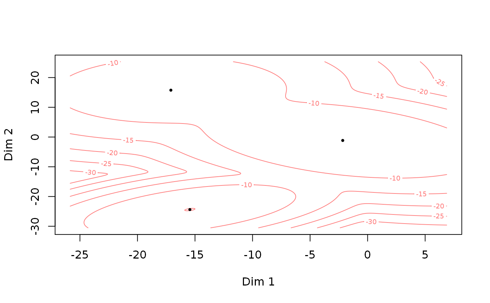

Generate a random set parameters for the Gaussian mixture
model (GMM) and Gaussian mixture copula model (GMCM). Primarily, it provides
an easy prototype of the theta-format used in GMCM.
rtheta(m = 3, d = 2, method = c("old", "EqualSpherical", "UnequalSpherical", "EqualEllipsoidal", "UnequalEllipsoidal"))
| m | The number of components in the mixture. |
|---|---|
| d | The dimension of the mixture distribution. |
| method | The method by which the theta should be generated.
See details. Defaults to |
A named list of parameters with the 4 elements:
mAn integer giving the number of components in the mixture. Default is 3.
dAn integer giving the dimension of the mixture distribution. Default is 2.
pieA numeric vector of length m of mixture
proportions between 0 and 1 which sums to one.
muA list of length m of numeric vectors of
length d for each component.
sigmaA list of length m of variance-covariance
matrices (of size d times d) for each
component.
Depending on the method argument the parameters are generated as
follows. The new behavior is inspired by the simulation scenarios in
Friedman (1989) but not exactly the same.
pie
is generated by \(m\) draws of a chi-squared distribution with
\(3m\) degrees of freedom divided by their sum. If
method = "old" the uniform distribution is used instead.
mu
is generated by \(m\) i.i.d. \(d\)-dimensional zero-mean
normal vectors with covariance matrix 100I.
(unchanged from the old behavior)
sigma
is dependent on method. The covariance matrices for each
component are generated as follows. If the method is
"EqualSpherical", then the covariance matrices are the
identity matrix and thus are all equal and spherical.
"UnequalSpherical", then the covariance matrices are
scaled identity matrices. In component \(h\), the covariance
matrix is \(hI\)
"EqualEllipsoidal", then highly elliptical covariance
matrices which equal for all components are used.
The square root of the \(d\) eigenvalues are chosen
equidistantly on
the interval \(10\) to \(1\) and a randomly (uniformly)
oriented orthonormal basis is chosen and used for all
components.
"UnqualEllipsoidal", then highly elliptical covariance
matrices different for all components are used.
The eigenvalues of the covariance matrices equal as in all
components as in "EqualEllipsoidal". However, they are all
randomly (uniformly) oriented (unlike as described in
Friedman (1989)).
"old", then the old behavior is used.
The old behavior differs from "EqualEllipsoidal" by using
the absolute value of \(d\) zero-mean i.i.d. normal
eigenvalues with a standard deviation of 8.
The function is.theta checks whether or not theta
is in the correct format.
Friedman, Jerome H. "Regularized discriminant analysis." Journal of the American statistical association 84.405 (1989): 165-175.
Anders Ellern Bilgrau <anders.ellern.bilgrau@gmail.com>
rtheta()#> theta object with d = 2 dimensions and m = 3 components: #> #> $pie #> pie1 pie2 pie3 #> 0.58534163 0.02938762 0.38527075 #> #> $mu #> $mu$comp1 #> [1] -7.535104 12.801516 #> #> $mu$comp2 #> [1] -9.52905 16.22379 #> #> $mu$comp3 #> [1] 26.001420 1.396485 #> #> #> $sigma #> $sigma$comp1 #> [,1] [,2] #> [1,] 10.8007448 -0.1486676 #> [2,] -0.1486676 6.3964607 #> #> $sigma$comp2 #> [,1] [,2] #> [1,] 8.468842 -1.117277 #> [2,] -1.117277 7.976768 #> #> $sigma$comp3 #> [,1] [,2] #> [1,] 6.528148 3.371957 #> [2,] 3.371957 6.616887 #> #>rtheta(d = 5, m = 2)#> theta object with d = 5 dimensions and m = 2 components: #> #> $pie #> pie1 pie2 #> 0.4563865 0.5436135 #> #> $mu #> $mu$comp1 #> [1] -1.040391 7.329730 4.556796 2.880795 -10.736909 #> #> $mu$comp2 #> [1] 6.487425 2.991623 -7.959950 -0.293534 21.802357 #> #> #> $sigma #> $sigma$comp1 #> [,1] [,2] [,3] [,4] [,5] #> [1,] 3.58303151 2.2724500 -0.06694815 1.1431379 -1.8603162 #> [2,] 2.27245000 4.2616259 -0.81793510 0.9069594 -1.0912561 #> [3,] -0.06694815 -0.8179351 2.82135557 0.3351446 0.5866486 #> [4,] 1.14313788 0.9069594 0.33514464 2.7752424 -0.1468975 #> [5,] -1.86031619 -1.0912561 0.58664865 -0.1468975 2.6438174 #> #> $sigma$comp2 #> [,1] [,2] [,3] [,4] [,5] #> [1,] 6.6378803 -5.1945442 1.661071 -0.3862394 2.086088 #> [2,] -5.1945442 8.6296959 -1.810793 0.3705506 1.488922 #> [3,] 1.6610707 -1.8107928 3.504766 -1.3885595 -2.540656 #> [4,] -0.3862394 0.3705506 -1.388560 12.2751912 -1.928562 #> [5,] 2.0860880 1.4889221 -2.540656 -1.9285615 7.046797 #> #>rtheta(d = 3, m = 2, method = "EqualEllipsoidal")#> theta object with d = 3 dimensions and m = 2 components: #> #> $pie #> pie1 pie2 #> 0.3917664 0.6082336 #> #> $mu #> $mu$comp1 #> [1] 6.111832 9.365707 -3.675417 #> #> $mu$comp2 #> [1] 7.403768 12.185331 6.291344 #> #> #> $sigma #> $sigma$comp1 #> [,1] [,2] [,3] #> [1,] 48.116580 43.35063 -5.569435 #> [2,] 43.350634 52.31908 -23.382208 #> [3,] -5.569435 -23.38221 30.814336 #> #> $sigma$comp2 #> [,1] [,2] [,3] #> [1,] 48.116580 43.35063 -5.569435 #> [2,] 43.350634 52.31908 -23.382208 #> [3,] -5.569435 -23.38221 30.814336 #> #>#> [1] TRUEsummary(test)#> A theta object with d = 2 dimensions and m = 3 components.print(test)#> theta object with d = 2 dimensions and m = 3 components: #> #> $pie #> pie1 pie2 pie3 #> 0.2808003 0.1546334 0.5645663 #> #> $mu #> $mu$comp1 #> [1] -15.44657 -24.38766 #> #> $mu$comp2 #> [1] -17.09782 15.75464 #> #> $mu$comp3 #> [1] -2.162109 -1.151102 #> #> #> $sigma #> $sigma$comp1 #> [,1] [,2] #> [1,] 8.449090 3.995014 #> [2,] 3.995014 6.973794 #> #> $sigma$comp2 #> [,1] [,2] #> [1,] 14.1526073 0.9315618 #> [2,] 0.9315618 16.9025868 #> #> $sigma$comp3 #> [,1] [,2] #> [1,] 15.089421 -6.048641 #> [2,] -6.048641 16.302684 #> #>plot(test)if (FALSE) { A <- SimulateGMMData(n = 100, rtheta(d = 2, method = "EqualSpherical")) plot(A$z, col = A$K, pch = A$K, asp = 1) B <- SimulateGMMData(n = 100, rtheta(d = 2, method = "UnequalSpherical")) plot(B$z, col = B$K, pch = B$K, asp = 1) C <- SimulateGMMData(n = 100, rtheta(d = 2, method = "EqualEllipsoidal")) plot(C$z, col = C$K, pch = C$K, asp = 1) D <- SimulateGMMData(n = 100, rtheta(d = 2, method = "UnequalEllipsoidal")) plot(D$z, col = D$K, pch = D$K, asp = 1)}